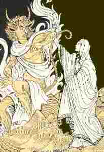

Ar Plac'h dimezet gant Satan

Ton
|
I
1. Selaouit holl, bihan ha bras, Ar barzh-baleer ur wech c'hoazh. 2. Ur werzh nevez am eus savet; kozh ha yaouank, deuit d'he c'hlevet. 3. An dra-mañ pa oa degouezet, N'oan ket daouzek vloaz achuet. 4. N'oan ket daouzek vloaz achuet, Ha setu m'em zri-ugentvet. 5. Deuy d'am selaou neb a garo, Da selaou ar baleer-bro; 6. Deuit d'am selaou holl, mar keret; Benn ur pennad na reot ket. II 7. Teir noz n'am eus kousket banne, Nag henoz na rin adarre, 8. Gant c'hwibanoù an naer-wiber, O c'hwibanat war lez ar stêr. 9. Hi lavare dre he c'hwiban: - Setu ganin-me c'hoazh unan ! 10. Eus ar gêr-mañ 'm eus bet pevar, Heb charrat nikun d'an douar.- 11. Daou zen yaouank a ziaze A oe dimezet an deiz-ze. 12. Triwec'h kemener a oe bet D'aozañ dezhi sae he eured; 13. D'aozañ dezhi sae he eured, Oa enni daouzek a stered; 14. Oa enni daouzek a stered, Hag an heol hag al loar pintet, 15. Triwec'h kemener d'he gwiskañ, Nemet Satan d'he diwiskañ. 16. An oferenn pa oe kanet, E tistroas barzh ar vered. |
17. O vonet tre barzh an iliz,
Oa ker kaer evel bleun al liz; 18. O tont en-dro trezek dor-zal, Oa ker ven hag un durzhunell. 19. Setu un aotrou bras fichet, Hag eñ penn-da-benn houarneset; 20. Hag un tok-houarn aour war e benn, Hag ur paltog ruz war e gein; 21. - He lagad evel luc'hedenn, Dindan e dog-houarn en e benn; 22 Ha gantañ un inkane saoz; Hag eñ ken du evel an noz, 23. Un inkane, tan diouc'h e dreid, Evel hini 'n aotrou marc'heg, 24. An aotrou Piar Izel-vet, (Bezet gant Doue pardonet !) 25. - Taolit din-me ar plac'h nevez, Da gas da welet d'am zud-me; 26. Da gas d'am zud-me da welet; Bremaik e vin distroet.- 27. Kaer oa gortoz ar plac'h nevez, Ar plac'h nevez na zistroas. III 28. Pa oa sonerien an ebad O tont d'ar gêr noz-diwezhat, 29. Setu an aotrou bras fichet: - C'hoari gaer er fest a zo bet? 30. - C'hoari gaer a-walc'h en eured, Med ar plac'h nevez zo kollet. 31. - Ar plac'h nevez a zo kollet? Ha c'hoant vez ganeoc'h d'he gwelet? 32. - C'hoant a-walc'h hor bo d'he gwelet, Ma n'hor bo poan na droug ebet.- |
33. Oa ket ho c'homz peurlavaret
Pa oant gant an aod degouezet; 34. Ha gant ul lestr degemeret, Hag ar mor bras a oa treuzet, 35. Lenn an Anken hag an Eskern, Ha pa oant e toull an ifern. 36. - Setu sonerien hoc'h eured A zo deut evit ho kwelet. 37. Petra rofac'h d'an dud vat-mañ, A zo deut d'ho kwelet amañ? 38. - Dalit seizenenn va eured. Kasit-hi ganeoc'h, mar keret; 39 Dalit bizoù aour va eured, Kasit-hen d'ar gêr d'am fried. 40. Livirit dezhan: "Na ouel ket, N'he deus na c'hoant na droug ebet." 41. Kasit-hen d'ar gêr d'am fried, A zo intañv deiz e eured. 42. Me zo en ur gador aouret, O veskiñ mez d'ar re zaonet.- IV 43. N'o doa ket graet ur gammed grenañ, Pa glevzont tenn' ur youc'hadenn: 44. - Mil mallozh deoc'h-hu, sonerien !- Puñs an ifern oa war he fenn. 45. Mar defe he seizenn miret Koulz ha bizoù aour he eured, 46. Koulz hag he bizoù benniget, Puñs an ifern oa kounfontet. V 47. An neb a ra tri dimizi; Tri dimizi hep eureujiñ, Ez a d'an ifern da leskiñ, 48. Ken distak diouzh ar baradoz, Ha 'mañ 'n delienn sec'h diouzh ar roz; 49. Ker kuit diouzh baradoz Doue, Ha 'mañ 'r skourr troc'het diouzh ar gwez |
Variantes tirées du premier carnet de collecte de La Villemarqué

|
P. 195.1
Zon an naer-wiber (7) Teir nozvezh zo n'am eus kousket banne Nag e-noz na rin adarre (bis) (8) O kleved trouz an naer-wiber O c'hwibanat war ar rivier (9) Hag a lare dre he c'hwiban: - Ne faot dimezi 'med unan. (11) Daou zen yaouank a galité Yes da eurejiñ an deiz-se. (16) Pa oa echuet an eured, Oant distroet barzh ar vered (19) Dont eno un aotroù brav fichet 'Tont da c'houlenn ar plac'h nevez: (25) - Prestit din-me ho plac'h nevez Da gas d'am itron da weled. Vo ket pell zegouezh d'ar vered. P. 196.1 Ar plac'h ne mui na zegouezh. (28) Pa oa sonerien an eured O vont d'ar ger demeus ar fest (29) A rankontrent war an hent hed Un aotroù hag eñ brav fichet. (30-1) - Eurvat, sonerien an eured! C'hoari gaer zo bet barzh ar fest? (30-2) - C'hoari 'walc'h zo bet en eured Med ar plac'h ne'ez a zo kollet. (31) - Deuit ganin, sonerien an eured M'ho c'haso ganin d'he gweled. (32) - Mar n'em bezomp drouk ebed, Ni vo kountant 'walc'h d'he gweled. (37-1) - Petra roit deomp, sonerien an eured 'Vit ar poan o vont d'he gweled? (37-2) - C'hwi zo deuet d'an ivern d'am gweled p. 196-1 (38) Ro din da bizoù ha da zeizenn Evit kas d'ar ger d'ho ferc'henn. (45-2) He bizoù, mar doc'h he biz 'fe ket tennet, (44-2) Puñs an ivern vefe konfoñdet. (47) An hini ra daou-tri dimezi Heb eureujiñ na interriñ A ya d'an ivern da loskiñ (a) Siwazh, e-mañ zo ar pevarved Heb c'harroud nikun d'an douar. Variante 1 P. 195.1 (au crayon sous le texte à l'encre) (a) Gant an ... lar n...s dimezet 'med unan. Fiancée à beaucoup, mariée à un seul(?) Betrothed to many, married to but one(?) (47-1) 'N hani ra daou-tri dimezi (48) Zo kén distag demeus Doue D'ema delienn demeus ar gwez Zo ken distag d'ar Baradoz Ha 'ma an delienn deuz ar roz. (a) Siwazh bepred hi ...pevar Heb c'harroud nikun d'an douar Hélas, quatre fois toujours fiancée Sans que nul ne soit convoyé en terre. Alas, four times betrothed again And no one was carried to earth! (46) ...benniget Alaz, siwazh, emaon kollet! (12) Triwec'h kemener oa klasket D'aozañ d'ar plac'h habit eured. (13) Ha c'hoazh e oa forzh rubaned. Variante 2 p. 196.1 (au crayon sous le texte à l'encre) (18) Kaset he d'ar ger, War an hent-bras en em lakas (19) Un denjentil a rankontras. - Denjentil din a lavarit |
(b) Ha c'hwi rofe din habit eured
Hag e kavfen brav pa m'e gwisked? - Ya, me a bresto habit eured Hag e kavfec'h brav pa m'e gwisked. Est-ce que vous me donneriez un habit de noces Que je trouverais seyant à revêtir? - Oui, je vous prêterai un habit de noces Que vous trouverez seyant à revêtir. Would you give me a wedding suit I would deem worthy to be doned? - Yes, I'll lend you a wedding suit You shall deem worthy to be doned? (17) Pa oa tonet en iliz E oa ... flourdeliz (18) Pa zistroas...d'an aoter (19) Pa oa tonet 'maes an iliz Un denjentil a rankontriz: (25) - Lavar d'in e konduirec'h Ha c'hwi prestfec'h din ho plac'h eured! (26) Pre...aet an noblañs da weled Prologue [Noté transversalement dans la marge inférieure, page 211 ] (1) Selaouit holl, bihan ha braz Ar baleer bro ur wech c'hoazh! (2) Ur zonig nevez 'm eus savet Kozh ha yaouank deuit e kleved! (3) An dra-mañ pa oa digouet N'oan ket daouzek bloaz echuet, (4) N'oan ket daouzek bloaz echuet Ha bremañ on tri-ugent tremenet Hag on pevar-ugent tremenet. (5)Me selaouo neb a garo, Selaouo ar baleer-bro! (6) 'Benn ur pennad mui na rayo Rag 'benn a neuze ' vin maro. Variante 3 [Notée longitudinalement dans la marge de gauche page 195 ] (19) Dont eno 'n aotroù brav fichet, Eñ du, penn-da-benn harneset (d) Gantañ 'n e heul ur p... koz Hag eñ ken du evel an noz. (20) Hag eñ harneset penn-da-benn Hag ur vantel ruz war e kein. (22-1) Ha gantañ un inkane-réd, (23-2) Vel d'an hini 'n Aotroù marc'hek (24) 'N aotroù person an Izelved. Bezet gant Doue pardonet! Variante 4 [Notée dans l'angle inférieur gauche page 211 ] (33) N'oa ket o komz peurlavaret War laez an aod a oa degouet (34) Ha war ul lestrig oa pignet Hag ar mor braz a oa treuzet (35) Ha stank an anken hag an ...et Hag en ivern a oa degouet. ********************************** ME 'M-EUS GRAET DAOU-TRI DIMEZI P. 196.1 (c) Me 'm eus graet daou-tri dimezi Va mamm a zo kiriek din. Je me suis fiancée deux ou trois fois Par la faute de ma mère. Two or thee times I was betrothed My mother must be blamed for it. (48) Ken distag on deus ar baradoz Vel an delioù demeus ar roz. (49) Ken distag baradoz Doue Vel brankoù sec'h demeus ar gwez (18) Pa zistroe deus an aoter Oa ken du evel Lusifer (17) Pa zistroas deus an nor-zal Oa ken kaer evel ar c'hristal P. 196.2 (d) He tad, he mamm 'dal m'he welas War o zaoulin en em strinkas: - Refe Doue ar gras din |
Deufe va merc'h d'al liv n'efa ken.
An oferenn nevez pa oa echuet Brouskoù voulouz oa preparet. Brouioù voulouz 'vit he goulenn Ha Lusifer 'vit he diskenn. Pa oant degouet tal ar vered I rankontras an drouk spered Ses père et mère en la voyant Se sont jetés à genoux: - Dieu me fasse la grâce de rendre à ma fille ses couleurs d'autrefois.- Quand la messe de mariage fut dite On prépara des ... de velours Des ... de velours pour satisfaire sa demande, Et que Lucifer la leur rende (descende). En arrivant devant le cimetière Ils ont rencontré l'esprit malin. Her father, her mother on seeing her Threw themselves on their knees: - May God grant me the favour of giving Her back her fresh complexion.- When the wedding mass was said, Velvet garments were prepared, Garments of velvet as required That Lucifer might give her back. When the arrived before the churchyard, They encountered the evil spirit. (25) - Taolit din ar plac'hig nevez Ha me c'haso d'eoc'h d'ar ger he. (30) - Eurvat.. Trapeg zo bet er banket? - Trapeg awalc'h zo bet... Med ar plac'h nevez zo kollet. (31) - Ar plac'h nevez a zo kollet? C'hwi vefe kountant d'he gweled? (36) - Eurvat d'eoc'h soner eured! C'hwi zo deuet d'an ivern d'am gweled? P.211.1 (39) Dallit-hu bizoù va eured, Kasit e d'am kentañ pried, (40) Larit de'an na ouela ket! Me zo amañ 'm eus drouk ebet. (e) Deiz va eured eil Tavañcher... diwezhañ Le jour de mon second mariage Dernier...tablier On the day of my second wedding Last...apron (43) Ne 'fent ket graet ur pas krenn Int c'hlevas ober ur griadenn (44-2) Puñs an ivern oa war he fenn. (44-1) - Malloz d'ar sonerien va eured Zo deuet d'an ivern d'am gweled! (42) Me 'm eus ur gador alaouret Mesk o kaoter d'ar re zaonet, (40-2) Lec'h n'am eus c'hoant na drouk ebed. "Après avoir donné les hardes bénies, elle tomba au pouvoir du diable. Toutes ces hardes sont bénies." "The moment she gave away these blessed "items", The devil hold her in his power. All these items are blessed". P. 196.2 Variante 1 [au crayon (pencil-written)] (30-1) - Bonjour sonnerien an eured Ha cher-vat zo bet 'n ho panket? (30-2) - Cher-vat awalc'h a zo bet Med ar plac'h ne'ez a zo kollet. (31) - Lavar din, soner an eured Ha c'hwi v'e kountant d'he gweled? (32) - Kountant awalc'h vijen d'he gweled Mar 'bo na poan na drouk ebed (32) - Na 'po na droug ebed na poan ... d'he gweled. (f) A lavare dezhi an holl diaouled - Petra... da zont da ...rit? - Petra rit ... Vit dont d'an ivern ... kollet? - Bizoù eured - Larit dezhan na z... deiz e eured A lare dezhi an holl diaouled Ma 'peus ... ha dour benniget Ne 'po na poan na droug ebet. Tous les diables lui dirent: - Pourquoi venir...en enfer...perdue? ...Si vous avez...de l'eau bénite...perdue Vous n'aurez ni peine ni mal. |